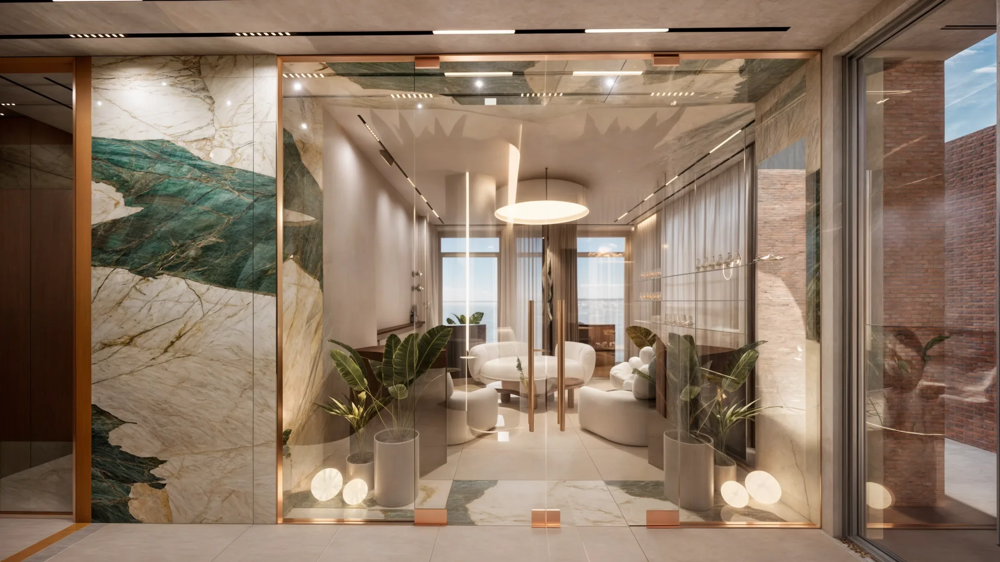
Clinic ZTB
Zlatibor, Srbija, 2024
Enterijer privatne klinike na Zlatiboru, osmišljen kao miran prostor nalik hotelskom, a ne kao klinički. Recepcija i čekaonica kombinuju mekano tapacirano sedenje, orahove stolove i biljke sa velikom botaničkom zidnom obradom iza stakla, tako da je prvi utisak toplina, a ne hodnici i bele pločice.
Ordinacije nastavljaju istu paletu toplih kamenih površina, drveta i mesinga. Ugrađeni pultovi sa mesinganim lavaboima, skriveni ormari i meko privesno osvetljenje čine prostorije praktičnim za svakodnevni rad, dok sanitarni čvorovi dobijaju snažniji karakter tamnim mermerom i šarenom tapetom.


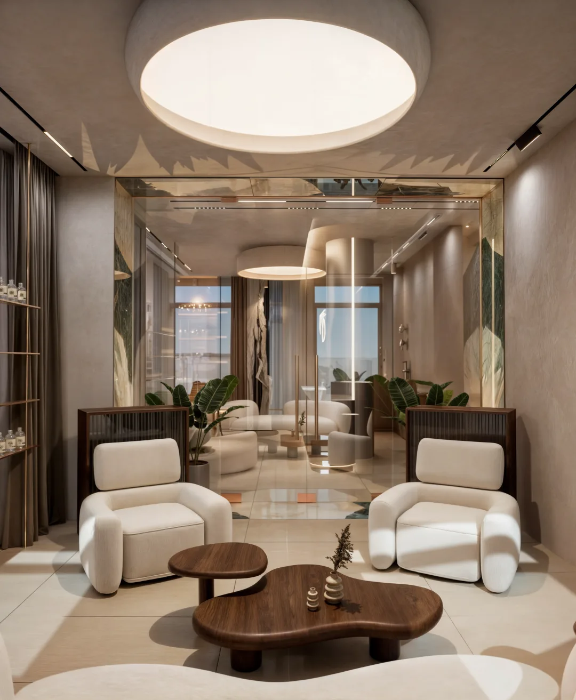

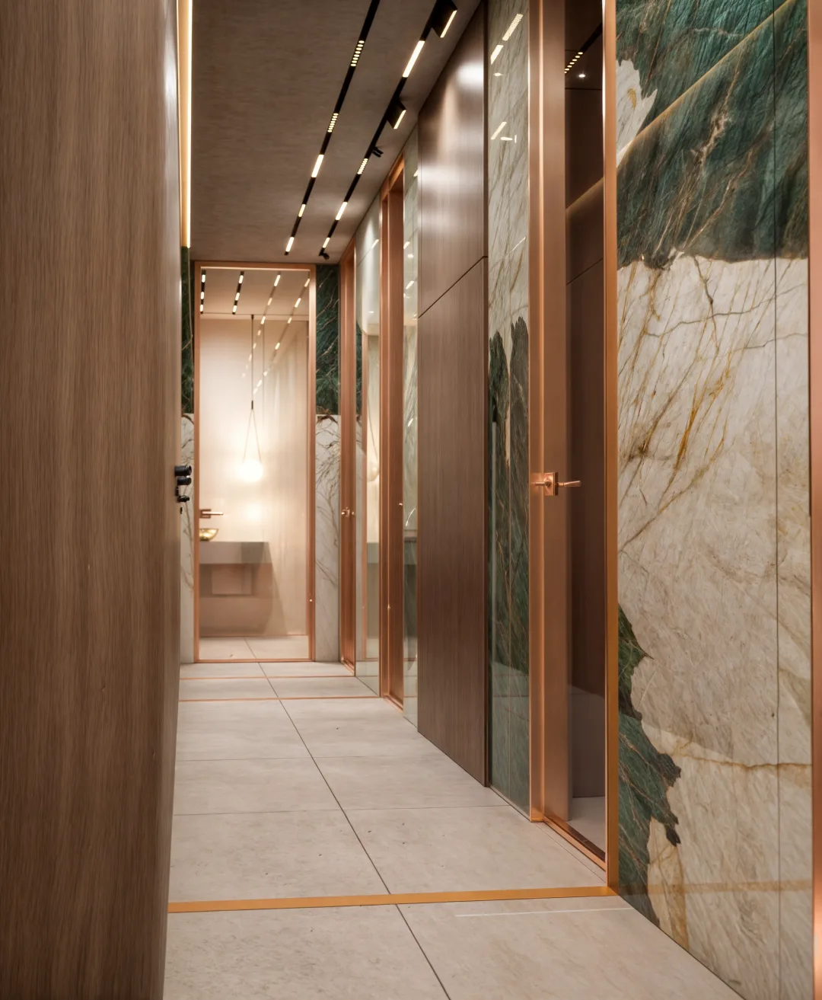


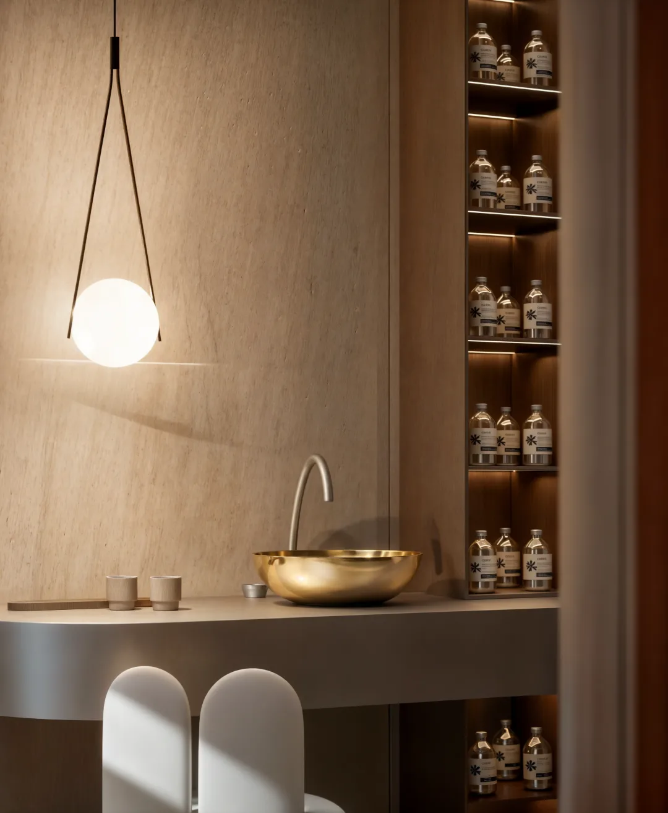


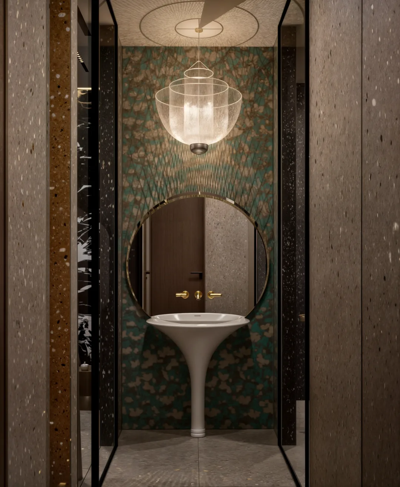
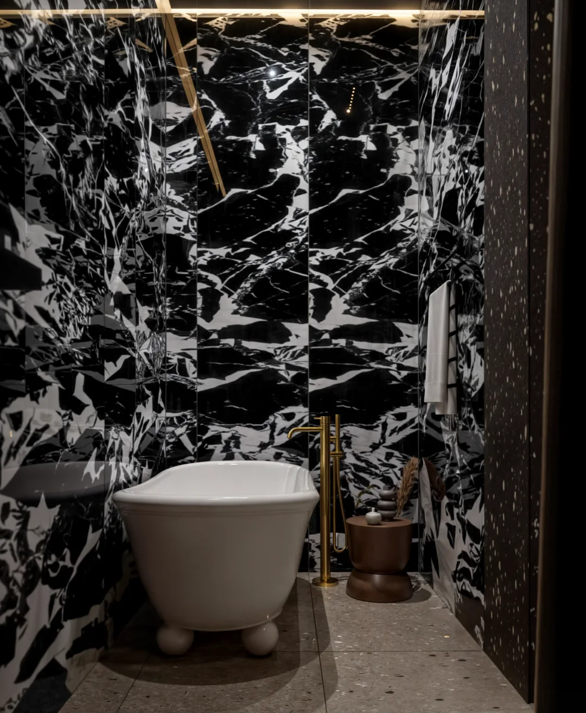
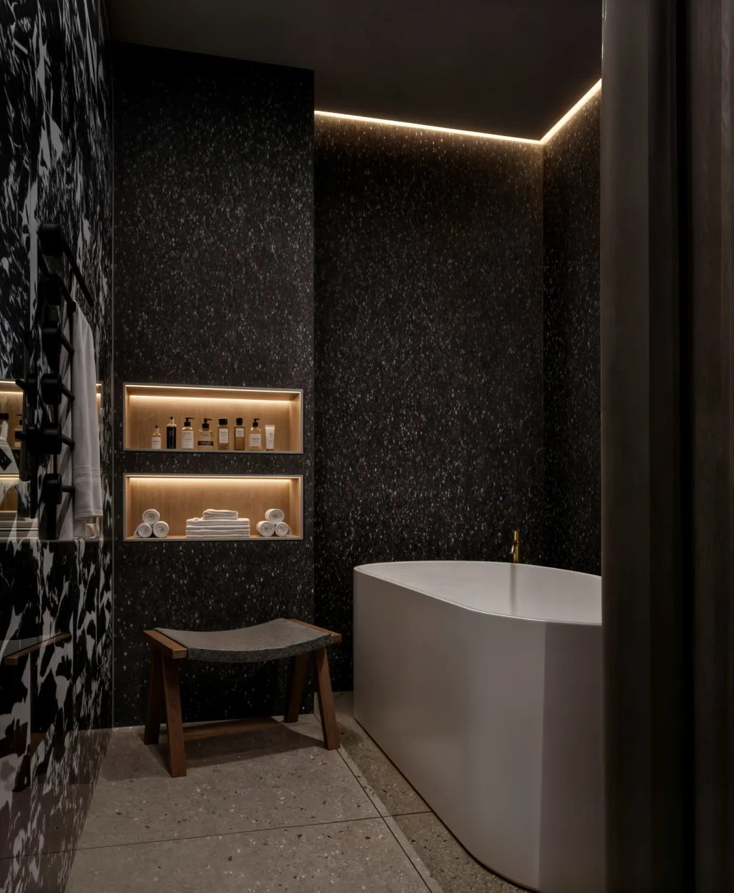
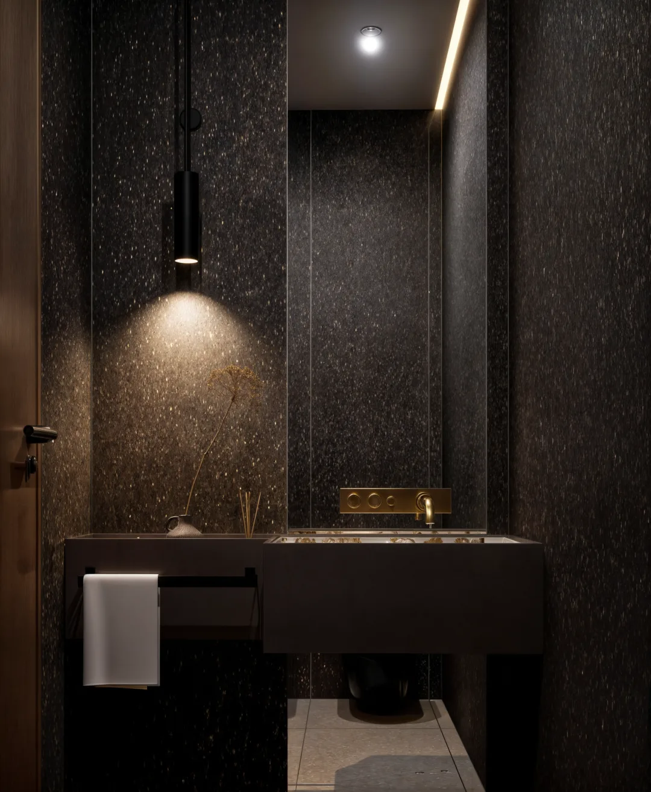
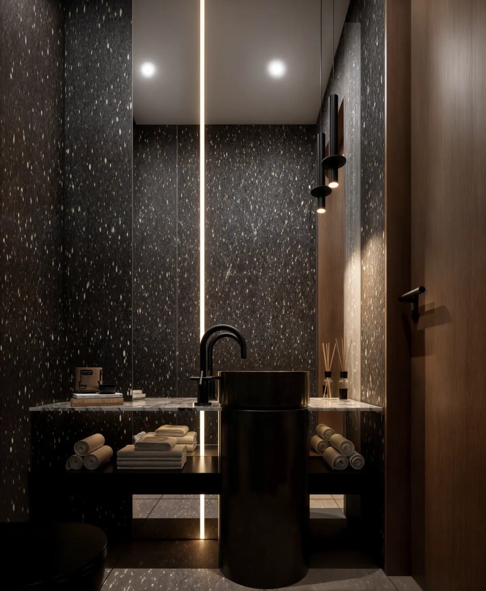
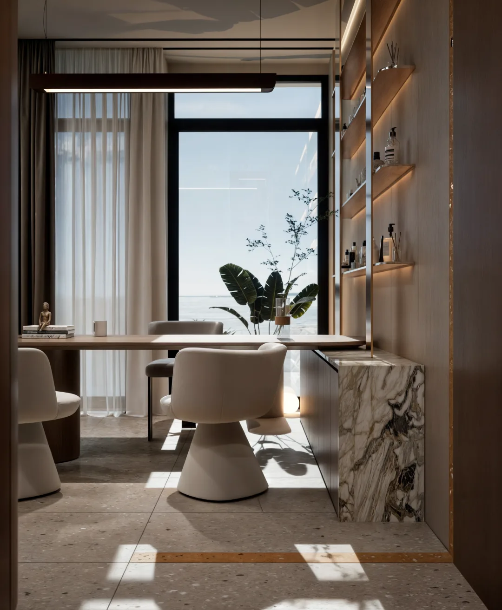
-enhanced-p-1600.webp)
-enhanced-p-1600.webp)
-enhanced-p-1600.webp)
-enhanced-p-1600.webp)
-enhanced-p-1600.webp)
Sledeći projekatCaffe Spass, BelgradePogledaj projekat
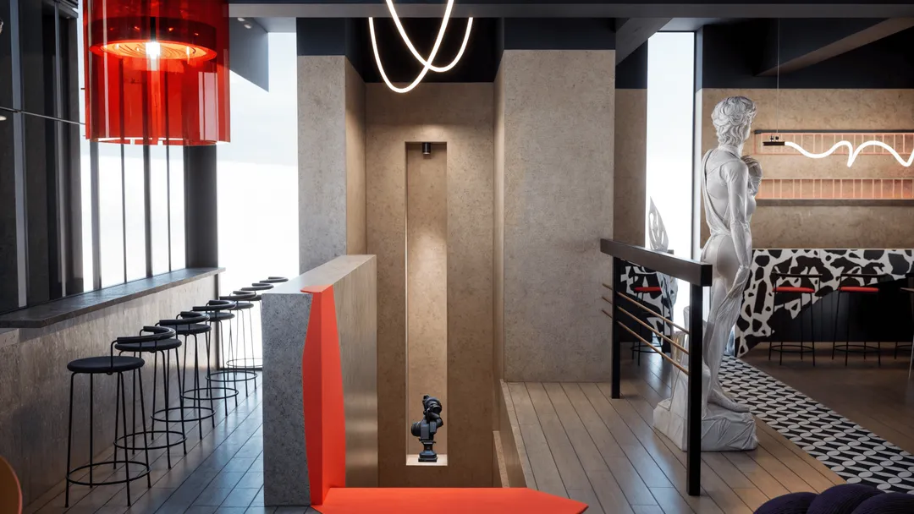